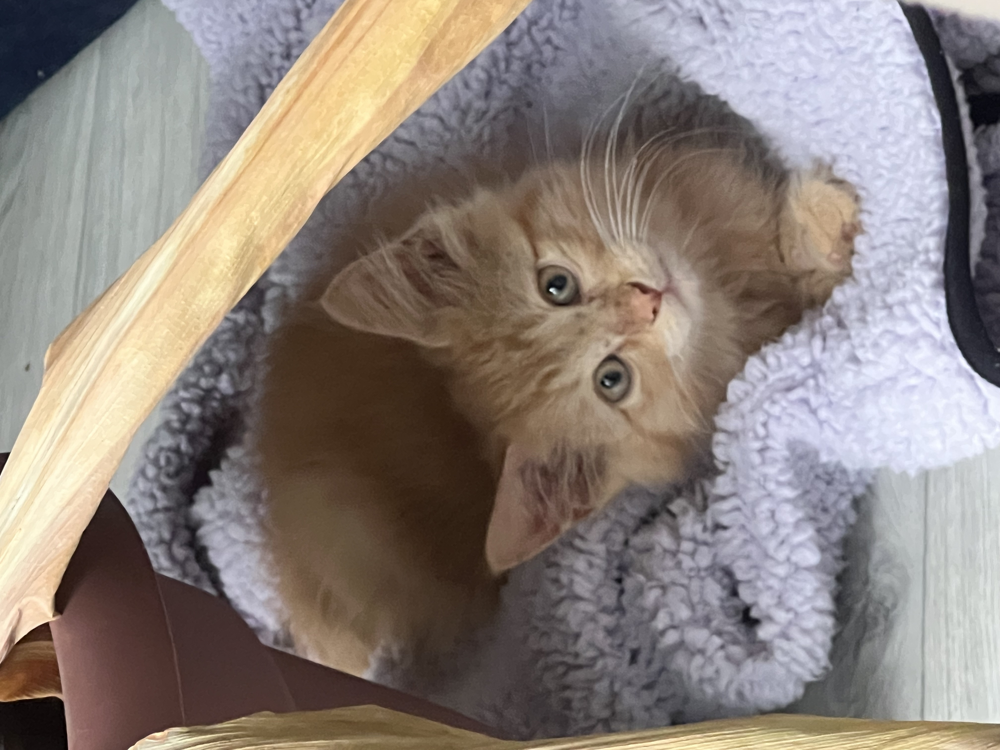

Hello, I'm Tamara Walling, better known as Tam!
About Me
Howdy! Here's a little about me:
Hobbies
- Exploring the outdoors
- Adventuring and traveling
- Painting
- learning new things, which then leads to rabbit holes and doom scrolling
My Pet
This is my adorable orange kitten, Charmander noodle butt Walling:

Charmander was saved from a fire before I rescued him from the Sand Springs Animal Shelter. He's basically a sour patch kid, first he's sour then he's sweet!
Why I Chose Atlas
I stumbled upon Atlas while scrolling through the internet one day and decided to make the leap into full-stack development. During Covid, I downloaded an app called, "Mimo", and replaced doom scrolling with this app and loved it.
My Future Goals
With my Full-Stack knowledge, I aim to:
- Work in a dynamic tech company or just hop around freelansing
- Maybe teach small amounts of basic code
- Create a few apps in future
Fun Facts
- I'm a safety inspector and work with ziplines all over the United States!
- I love spending time outdoors and am always up for an adventure.
- I plan to move to Spain in the future!
- I love learning new things, and tend to try and learn too many things at once.
Favorite movies/shows
- Mr. Robot
- Harry Potter series
- How To Get Away with Murder
- Through My Window series
- Pretty Little Liars
- Gilmore Girls
- Avatar the Last Airbender (original cartoon)